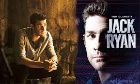

Pilot /
Jack Ryan(season 1, episode 1)

CIA analyst Jack Ryan uncovers a series of suspicious transactions that take him and his boss James Greer out from behind their desks into the field to hunt down a powerful new threat to the world; Hanin questions her husband's affairs.
French Connection /
Jack Ryan(season 1, episode 2)
Jack and Greer decode a fresh piece of intel that takes them to Paris and one step closer to the elusive Suleiman; Hanin's husband returns home with a renewed fervor for his secretive mission, leaving her unsure of their family's future.
The Wolf /
Jack Ryan(season 1, episode 3)
As Jack and Cathy grow closer, Jack's double-life is put to the test; a show of force from Suleiman adds to his ranks and brings him one step closer to his next attack.
Black 22 /
Jack Ryan(season 1, episode 4)
Drone pilot Victor struggles with the immense responsibility attached to his job; Jack and Greer join French intelligence officers on a mission to track down Suleiman's brother; Hanin must make a dangerous decision for the sake of her children.
Cargo
(season 2, episode 1)
Jack Ryan searches for the truth behind Venezuela's nuclear ties and its imminent threat to the United States; about to be sidelined from his new post in Russia, James Greer joins Jack in Venezuela in the midst of a dictator's re-election effort.
Tertia Optio
(season 2, episode 2)
Sen. Chapin grants Jack permission to stay in Venezuela; President Reyes denies involvement in an American senator's assassination; Jack and Harry team up to follow a lead that could create dissension within the ranks.
Orinoco
(season 2, episode 3)
The U.S. Special Activities team lands in Venezuela, where Jack's intel leads it to a militia-guarded compound; a team member gets left behind in the jungle when the mission goes awry; President Reyes' opponent proves to be a real contender.
Dressed to Kill
(season 2, episode 4)
Relieved of duty in Venezuela, Jack follows a new trail to London, seeking help from MI5, only to discover the man that he is after is also after him; back in Venezuela, Reyes makes Gloria an offer.
Tom Clancy's Jack Ryan
IMDB:8.2/10
Rotten Tomatoes:73%
Tv.com:8.2/10
Author Tom Clancy introduced the character of Jack Ryan in a series of books before Ryan headed to the big screen in several films. Now the former U.S. Marine is featured in an episodic series for the first time, with John Krasinski portraying Ryan in this Amazon original thriller that centers on Ryan as an up-and-coming CIA analyst. He is thrust into a dangerous field assignment for the first time and uncovers a pattern in terrorist communication. That launches him into the middle of a dangerous gambit with a new breed of terrorism that threatens destruction on a global scale.
<